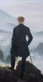
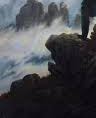
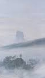
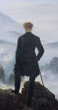
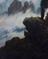
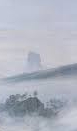

Perché sur un rocher au sommet d’une montagne, un homme contemple, tournant le dos au spectateur, un paysage enveloppé de brume. Une mer de nuages à la beauté envoûtante, presque irréelle, de laquelle apparaissent au loin d’autres sommets, dont certains sont coiffés d’arbres. Chef-d’œuvre absolu de Caspar David Friedrich (1774–1840), il incarne la quintessence du
romantisme C'est un romantisme expressif, mettant au centre le sentiments, l'individualité ou encore l'âme torturée.
allemand qui émerge en peinture au début du XIXe siècle. Omniprésente dans l’œuvre de Friedrich, la nature ne doit pas, pour lui, correspondre nécessairement au réel. Elle reflète avant tout, telle un miroir, l’âme tourmentée de l’artiste qui voit, dans chaque roche, chaque branche sinueuse ou chaque coin de ciel, une manifestation du divin.
 




